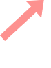
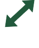

Sobre los botones
Los botones intentan darte una idea clara de su funcion con sus formas, imagenes y color, pero de igual forma te tenemos un listado para que seas todo un experto usando nuestra web.
 |
Al presionar el boton "Nodos" podras ir añadiendo nodos en el lienzo donde le des clicks, en caso de que los nodos se superpongan veras una animacion de choque pero no te preocupes estos se reacomodaran solos |
 |
Al presionar la paleta de colores en "Canvas color" podras elegir el color del lienzo que mas te guste |
|  | Al presionar el boton "Edge->" podras crear conexiones de aristas unidireccionales, primero haz click al nodo de inicio y luego haz click en el nodo final para realizar la conexion |
 | El boton de "Edge <->" sirve para crear una doble conexion entre 2 nodos primero toca un nodo y luego el otro y automaticamente se añadiran ambas conexiones |
Al presionar el boton "Borrar nodos" podras eliminar con un click los nodos que selecciones |
 |
Al presionar el boton "Borror edges" podras eliminar con un click la aristas que selecciones |
|
Al presionar el boton "Clean all" podras eliminar todo el contenido del lienzo esto significa que todos los nodos y aristas previamente creados seran eliminados |
Al presionar el boton "Matriz de Adyacencia" se generara la matriz al lado derecho del lienzo, con los grados de entrada y salida de cada nodo |
||
Export |
Al presionar el boton "Export" podras guardar un archivo JSON de tu grafo para que despues puedas volverlo a abrir |
Import |
Al presionar el boton "Import" podras elegir un archivo tipo JSON que exportaste con anterioridad de tus archivos locales y visualizar el grafo en la pagina |
Al apretar los botones de Nodes,edges y eliminar estos se mantendran activos para que puedas usarlos hasta que lo desees, para pararlos toca el mismo o otro boton
Preguntas mas frecuentes
Como cambiar el nombre a los nodos
Para modificar el nombre de un nodo debes hacer doble click en el nodo que desees cambiar de nombre, te saldra una ventana emergente en la parte superior de tu ventana en la cual pondras el nuevo nombre que desees pon aceptar y listo.
Como cambiar o añadir peso a las aristas
Para cambiar o añadir un peso a una arista debes hacer doble click en la arista que desees agregar un valor, te saldra una ventana emergente en la parte superior de tu ventana ingresa el valor pon aceptar y listo